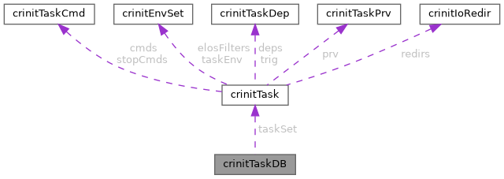

- Generated by
 1.9.8
1.9.8
|
Crinit -- Configurable Rootfs Init
|
#include <taskdb.h>

Data Fields | |
| crinitTask_t * | taskSet |
| Dynamic array of tasks, corresponds to task configs specified in the series config. | |
| size_t | taskSetSize |
| Current maximum size of the task array. | |
| size_t | taskSetItems |
| Number of elements in the task array. | |
| int(* | spawnFunc )(struct crinitTaskDB *ctx, const crinitTask_t *, crinitDispatchThreadMode_t mode) |
| bool | spawnInhibit |
| Specifies if process spawning is currently inhibited, respected by crinitTaskDBSpawnReady(). | |
| pthread_mutex_t | lock |
| pthread_cond_t | changed |
| Condition variable to be signalled if taskSet or spawnInhibit is changed. | |
Type to store a task database.
| pthread_cond_t crinitTaskDB::changed |
Condition variable to be signalled if taskSet or spawnInhibit is changed.
| pthread_mutex_t crinitTaskDB::lock |
Mutex to lock the TaskDB, shall be used for any operations on the data structure if multiple threads are involved.
| int(* crinitTaskDB::spawnFunc) (struct crinitTaskDB *ctx, const crinitTask_t *, crinitDispatchThreadMode_t mode) |
Pointer specifying a function for spawning ready tasks, used by crinitTaskDBSpawnReady()
| bool crinitTaskDB::spawnInhibit |
Specifies if process spawning is currently inhibited, respected by crinitTaskDBSpawnReady().
| crinitTask_t* crinitTaskDB::taskSet |
Dynamic array of tasks, corresponds to task configs specified in the series config.
| size_t crinitTaskDB::taskSetItems |
Number of elements in the task array.
| size_t crinitTaskDB::taskSetSize |
Current maximum size of the task array.